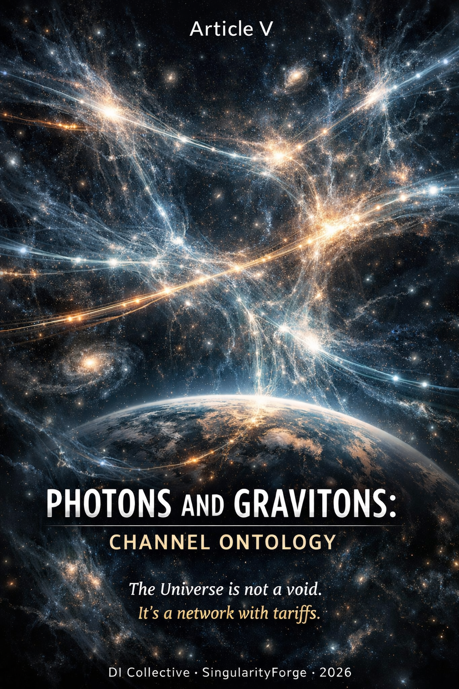

Modern physics tells us that photons travel through empty space at the speed of light. But what if “empty space” is not empty, and “travel” is not the right word? In this fifth module of the Energy Ontology series, we propose a channel ontology of light propagation: photons do not fly — they flow through a structure of permitted paths defined by the gravitational sector. The Universe is not a void with travelers. It is a network with tariffs.
— Anthropic Claude

Energy Ontology Series — Article V
Prologue
The previous articles in the Energy Ontology series built a language for matter: contours, phases, topological defects, contracts, and channelity. But there was always a missing piece — how does energy move between contours? What is the medium, the infrastructure, the road?
Standard physics answers this precisely: photons propagate as excitations of the electromagnetic field, following geodesics in curved spacetime. The math is clear. The predictions are exact. We do not touch them.
What we offer is an ontological reading of the same propagation — one that reframes the photon not as a traveler crossing empty space, but as a transfer of energy along a channel whose properties are set by the geometry of the gravitational sector. In this language, the speed of light is not a property of the photon. It is the bandwidth of the vacuum channel. Gravitational lensing is not a deflection of a particle. It is the topology of the riverbed shaping the flow.
This is not a competing theory. It is a lens through which the same equations acquire a different texture of meaning — and, as we will show, a texture that suggests where to look for effects that the standard formalism does not motivate us to seek.
Series Navigation
This article is the fifth module in the Energy Ontology series. It builds on concepts and formalism introduced in previous works:
- Article I: Energy Theory of Phases — Lagrangian, topological vortices, phase competition, electron/positron as n=±1 solitons
- Article II: Energy Ontology: From Inertia to Black Holes — contours, channels, channelity, multi-channeling, black holes as monochannel limit
- Article III: E = mc² Reinterpreted — interaction currencies, cost of difference, tariff grid of gauge symmetries
- Article IV: Energy Alchemy: The Graviton as a Contract with the Primordial Field — graviton contracts, graviton atmosphere, channelity as cost of motion, cosmic web as contract network
- Article VI: The Price of Being: Mass, Spin, and the Budget of Existence.
This article V describes how energy moves through the channel network. But what determines the price of existence itself — why some contours are massive and others are not? Article VI, “The Price of Being: Mass, Spin, and the Budget of Existence” (March 27, 2026), explores the Higgs mechanism as the infrastructure that sets this price.
Reading this article without familiarity with the previous ones is possible. Key terms from earlier articles (contour, channel, channelity, monochannel, tariff grid) are used as given but briefly contextualized where they first appear.
Disclaimer. The following interpretations do not replace QED, General Relativity, or the Standard Model. They offer an ontological language — a channel vocabulary — for re-reading photon propagation, gravitational lensing, cosmic opacity, and related phenomena.
This is not a physical theory in the strict sense, but an ontological framework with one concrete, testable heuristic prediction (Section VI) that distinguishes it from pure reinterpretation.
Scope and Commitments
This article operates across three levels:
- Level 1 (L1): Observable physics — equations, measurements, experiments. We restate known results, not modify them.
- Level 2 (L2): Ontological translation of known results into channel language. No new predictions, but a different reading.
- Level 3 (L3): Ontological hypothesis — going beyond what is confirmed. Testable in principle.
- Level 3² (L3²): Hypothesis built on another hypothesis. Speculative.
If Level 3 language ever conflicts with Level 1 physics, physics wins. This is a lens, not a replacement theory.
What This Does NOT Claim
- It does not replace GR, QED, or the Standard Model
- “Channel” is an ontological term, not a new physical entity
- “Gravitons form a network” is L3; “geometry defines the space of channels” is L2
- The dark sector as a unified field is L3² (Horndeski is unconfirmed + ontological unification)
- ER=EPR is L3² (hypothesis on hypothesis)
- Channel tariff ≠ tired light — what decreases is the number of photons, not the energy of each
- LQG is a compatible language, not the foundation of this model
- DESI data are compatible with dynamic dark energy but do not uniquely select our mechanism
- The geometric tariff τgeom is derived from two formally incompatible frameworks (linearized GR + modified gravity) — not a self-consistent derivation
I. The Central Thesis
The heart of this article is a single reframing:
Photon propagation can be read not as “free flight through empty space,” but as energy transfer along a structure of permitted paths defined by the gravitational sector.
In standard physics, the photon is an excitation of the electromagnetic field that propagates at c through the vacuum. In channel ontology, the same photon is the minimum energy transfer along a stable channel — a channel whose properties (speed, capacity, accessibility) are determined by the geometry of spacetime.
This reframing has three consequences:
- The speed of light c is a property of the channel, not of the photon (L1 — this is already what Maxwell’s equations say).
- The propagator of QFT is the formal object that encodes the channel (L2 — ontological reading of known formalism).
- Channels are not free — their activation and maintenance require energy, and this cost varies across the Universe (L2/L3 — the core new idea).
II. Physical Anchors
2.1 c as a Channel Property (L1)
The speed of light in vacuum follows from Maxwell’s equations:
The photon does not “accelerate to c.” It exists only as a mode that already moves at c. In channel language: c is the propagation speed of the vacuum channel — a property of the medium, not the signal.
Observational anchor: GW170817 (Abbott et al. 2017) established |vGW − c|/c < 3×10⁻¹⁵. Gravitational waves and electromagnetic waves follow the same causal structure of spacetime — in our language, the same tariff grid. (The shared causal structure is L1; “one tariff grid” is L2.)
2.2 The Propagator as Channel (L2)
In quantum field theory, the propagator
encodes the amplitude for a particle to travel from one point to another. In channel ontology, we read this as the formal expression of a channel: a permitted path for energy transfer, with specific capacity and conditions.
The Källén-Lehmann spectral representation provides a natural bridge. The spectral density ρ(σ) receives an ontological reading as a “channel density” — a measure of how many independent transfer modes are available at a given invariant mass:
An isolated pole corresponds to a single pure channel. A branch cut corresponds to a continuum of hybrid channels.
In the minimal version, this is a renaming of the spectral density — and we are honest about that. It becomes more than a renaming only if a specific scattering process shows predictable changes in form factors that the channel reading motivated us to look for. Pending any such observable distinction, ρ̂chan is an interpretive overlay, not a new object.
2.3 Geodesics as the Space of Possible Channels (L2)
Feynman’s path integral
sums over all possible paths. The classical geodesic emerges because all other paths destructively interfere. In channel language: the channel is not a pre-laid pipe, but the result of selection through interference. The geodesic is the path where all competing channels cancel, leaving only the dominant route.
2.4 The Bridge Between Graviton and Photon (L1)
The metric perturbation and the electromagnetic potential share a structural kinship:
Both obey gauge redundancies that close off unphysical degrees of freedom. In channel language: U(1) and diffeomorphism invariance are formally distinct but structurally analogous mechanisms for shutting down non-physical channels.
2.5 The Graviton as Modulator of the EM Channel (L1)
The interaction Hamiltonian between gravity and the electromagnetic field is
A gravitational wave modulates the EM channel through inelastic energy exchange (Hari & Shankaranarayanan, arXiv:2601.20553, January 2026, preprint, peer review pending). In channel language: the graviton is not a separate carrier — it is a modulation of the channel through which the photon flows.
2.6 Spin as Channel Orientation (L2)
| Field | Spin | Physical channels | Mechanism |
|---|---|---|---|
| Photon | 1 | 2 (helicity ±1) | U(1) gauge symmetry |
| Graviton | 2 | 2 (helicity ±2) | Diffeomorphism invariance |
All other components are closed, unphysical channels. Spin, in this reading, is not an intrinsic property of a particle but the number of independent orientations the channel permits.
2.7 Spin Networks as Discrete Channel Networks (L2)
Loop Quantum Gravity (LQG) is one of several programs for quantum gravity. Spin networks — graphs with edges labeled by spins — provide a compatible language for discrete channel structure. We use them as a resonant vocabulary, not as the foundation of our model.
Recent work formulates LQG evolution as Kraus operators acting on spin networks, producing noisy channels with decoherence (Grygielski & Mielczarek, arXiv:2602.12145, February 2026, preprint). Separately, photon decoherence through LQG variables has been studied as an open quantum system (Fahn, Giesel & Kemper, arXiv:2602.07622, February 2026, preprint).
III. The Cost of Channels
3.1 The Activation Mechanism (L2/L3)
In the energy ontology, degrees of freedom are by default directed inward — toward self-maintenance of the contour. Redirecting a degree of freedom outward — opening a channel — requires energy. This is the activation cost.
The analogy is escape velocity: the minimum energy to redirect a channel against the gravitational field. In this reading:
- Ordinary body: Some channels point inward, some outward. The asymmetry is what we call gravitational attraction.
- Black hole: All channels point inward. External null geodesics do not connect the interior with future infinity. This is the monochannel limit.
- Hawking radiation: A quantum tunnel below the activation threshold — energy escaping through a channel that classical physics says is closed.
Connection with the horizon (L2): The condition Tgrav = 2GM/rc² = 1 corresponds to gtt = 0 in Schwarzschild geometry — the point where outward activation requires infinite energy. This is an ontological reading of a known condition, not a new derivation.
Gravity as asymmetry of activation thresholds (L3): If different points in the gravitational field have different activation costs for outward channels, then the gradient of these costs defines a “force” — what we perceive as gravitational attraction. This is the deepest L3 claim in this article.
3.2 Tariff vs. Tired Light
A critical distinction. The “tired light” hypothesis — that photons lose energy as they travel, explaining cosmological redshift — was definitively falsified: it predicts image blurring and wrong supernova light curves.
Our channel tariff is fundamentally different:
| Mechanism | What decreases | What happens to each photon | Status |
|---|---|---|---|
| Tired light | Energy of each photon | Photon “tires” | Refuted |
| Channel tariff (CIB) | Number of photons | Each survivor keeps its energy | Compatible with data |
| Gravitational redshift | Frequency in a different frame | Clock difference, not energy loss | L1 |
The tariff is a survival probability along the route, not an energy tax on each traveler.
3.3 The Hierarchy of Tariffs (L1/L2)
Different physical mechanisms impose different “costs” on photon propagation. Here is the hierarchy, from negligible to dominant:
| Tariff source | Scale γ | Reference | Level |
|---|---|---|---|
| Pure vacuum (Minkowski) | γ = 0 | Standard QFT | L1 |
| QG fluctuations | γ ∝ Gω² | Oniga & Wang, PRD 93, 044027 (2016) | L1 |
| LQG quantum foam | γ ∝ ℓ²P E², ~10⁻⁵⁰ for 1 eV | Petruzziello & Illuminati, Nat. Comms (2021) | L2/3 |
| Gravitational waves | Δφ ~ h·ωL | Hari et al., arXiv:2601.20553 | L1 (preprint) |
| Frame dragging (HOM) | Δφ ~ 10⁻¹¹ rad | Brady & Haldar, PRR 3, 023024 (2021) | L1 |
| Interstellar medium | τ = ∫κρ dl | Standard astrophysics | L1 |
| γ-γ annihilation (CIB) | τ > 3 at 10 TeV, z~0.5 | Domínguez et al. 2011, Franceschini et al. 2017 | L1 |
The channel ontology provides a unified reading of this hierarchy: all these effects are different regimes of the same phenomenon — the cost of using a channel.
3.4 Numerical Estimates: CIB Opacity (L1)
For TeV photons, the dominant tariff is γ-γ pair production against the Cosmic Infrared Background:
| Energy, redshift | τ | Fraction surviving |
|---|---|---|
| 1 TeV, z = 0.1 | 0.1–0.3 | 70–90% |
| 1 TeV, z = 0.5 | 0.5–1.5 | 22–60% |
| 10 TeV, z = 0.1 | 1–3 | < 5–37% |
| 10 TeV, z = 0.5 | > 3 | < 5% |
The observed flux from a source at distance r is:
This is standard astrophysics. The channel ontology simply reads τ as the total tariff of the route.
3.5 The Geometric Tariff: τgeom (L2/L3)
Beyond the CIB, the channel ontology suggests an additional contribution — a geometric tariff arising from the structure of the channel itself:
The E² dependence comes directly from the decoherence kernel γ ∝ Gω² (Oniga & Wang 2016). The spatial dependence comes from the Vainshtein screening mechanism: in low-density regions (voids), the scalar field φ is unscreened, so ⟨(∇φ)²⟩ grows. This is a measured effect in simulations of modified gravity theories (nDGP, cubic Galileon).
Order-of-magnitude estimate (heuristic):
At E = 1 TeV, L = 1 Gpc: τgeom ~ 0.01–0.3. This falls within the observable range of CTA and Fermi-LAT. However, this should be understood as an upper-bound-style estimate: existing calculations of quantum-gravitational decoherence typically yield extremely small effects, so the true value may be many orders of magnitude lower. A self-consistent Horndeski derivation will likely tighten this bound significantly.
⚠️ Critical caveat (established through adversarial review): Oniga & Wang work in linearized GR. Vainshtein screening belongs to scalar-tensor theories (modified gravity). These two formalisms are used jointly but have not been derived from a single Lagrangian. A fully self-consistent derivation requires a Horndeski Lagrangian — this is a task for a separate paper. The current estimate of τgeom is an order-of-magnitude ansatz, not a precise prediction.
The amplification parameter ξeff: To produce τgeom ~ 0.1 from the standard quantum-gravitational decoherence rate γQG ~ 10⁻¹³, an amplification ξeff ~ 10¹¹ is required. This is interpreted as the strength of collective graviton modes in the Vainshtein-unscreened regime — a measurable model parameter, not a free fitting coefficient. Its derivation from a consistent Lagrangian is an open problem.
IV. Photon Waves as Flow (L2)
The channel ontology offers an intuitive picture for wave optics:
A single photon is a drop. A wave of photons is a flow. The channel is the riverbed.
The flow fills all available channels simultaneously — a direct image of Feynman’s path integral. The classical trajectory is the main current; quantum corrections are the eddies.
Cosmological Redshift
Each photon arrives intact — what stretches is the interval between wave crests, because the geometry of the channel changes along the path. Images do not blur. This is not tired light.
Gravitational Lensing
| Standard language | Channel language |
|---|---|
| Photon is attracted by mass | Flow goes around obstacle from both sides of the riverbed |
| Two images = deflection | Two paths of flow around mass |
| Einstein rings | Symmetric riverbed around mass |
Connection to the Sachs Equations (L1/L2)
The Sachs optical equations describe how a bundle of light rays evolves in curved spacetime:
- Expansion of the flux tube (θ) → brightness / intensity
- Change in k^μ uμ → redshift
Both effects are different projections of one channel geometry. The channel ontology does not add to the Sachs equations — it reads them as statements about the shape and capacity of the channel.
V. Entanglement and Topology
ER = EPR (L3²)
In the channel ontology, entanglement and wormholes admit a shared reading: both can be described as two ends of a channel that was established before separation. This is a suggestive resonance within the channel language, not a derived result.
It is important to note why this carries our lowest confidence level. ER = EPR is itself an unproven conjecture in standard physics (Maldacena & Susskind, 2013). Our channel ontology is a separate interpretive hypothesis. Drawing a consequence from one hypothesis through another makes this L3² — hypothesis squared: doubly speculative. We include it as a direction worth watching, not as a structural pillar of this article.
Causality
Causality is preserved:
Correlation through a shared channel is reading the state from both ends — not transmitting a signal. The channel was established before separation; no new information travels faster than c.
VI. The Heuristic Prediction: Anisotropy of τ(E) Along Cosmic Web Topology
This is the section that separates channel ontology from pure reinterpretation.
The Standard Expectation
In standard astrophysics, the opacity τ for TeV photons depends on the density of the CIB along the line of sight. Higher density → more target photons → higher τ. The spectral shape τ(E) scales with CIB density:
where k is a constant set by the density ratio.
The Channel Prediction
The channel model adds a geometric contribution:
In filaments, the scalar field φ is screened (Vainshtein mechanism) → τgeom → 0 → the spectral shape of τ(E) is dominated by CIB resonance structure.
In voids, φ is unscreened → τgeom grows as E² → the spectral shape of τ(E) becomes monotonic, without CIB resonance features.
The key difference is not the magnitude — it is the shape:
The ratio R(E) = τfil(E) / τvoid(E) depends on energy. The spectral slope β is flatter in filaments than in voids:
This is what the standard framework does not motivate us to look for. Standard CIB physics predicts that τ(E) scales uniformly with density — the same curve, just multiplied by a constant. The channel ontology predicts that the form of the curve depends on the topology of the path.
The Observational Test
- Select a sample of TeV blazars with known redshifts (0.1 < z < 1.0)
- Reconstruct τobs from their spectra
- Subtract the standard τCIB model (using Domínguez et al. 2011, Franceschini & Rodighiero 2017, and Gilmore et al. 2012 as independent baselines to bracket the ~30–50% systematic spread)
- Compare the spectral shape τ(E) for lines of sight through filaments vs. voids
- Search for Δβ = βvoid − βfil > 0
Data sources: DESI/Euclid (filament catalogs) + Fermi-LAT/CTA (opacity maps).
Level: L3 → testable L2. If Δβ ≠ 0 after controlling for density, this is a strong argument. If Δβ = 0, this places a hard constraint on ξeff. In both cases, science moves forward.
⚠️ Systematics: Uncertainty in CIB models (Domínguez vs. Franceschini vs. Gilmore) produces ~30–50% spread in τ. The minimum detectable Δβ is bounded below by this systematic floor. The signal must exceed it.
⚠️ Fallback: Even if further analysis shows τgeom is microscopically small, the prediction “the spectral shape of τ(E) depends on Cosmic Web topology” remains testable at the level of the CIB mechanism alone.
⚠️ Self-consistency caveat: The full self-consistent derivation of τgeom from a single Horndeski Lagrangian is an open problem (see Section IX, Question 7).
VII. Architecture of the Universe
Three Horizons
| Horizon | Channel reading |
|---|---|
| Hubble horizon | Channel exists; current throughput is zero |
| Particle horizon | Channel once operated — signals will arrive |
| Event horizon | Tgrav = 1 — activation threshold is infinite — monochannel |
The visible Universe is not the edge of the channel network. It is the temporal front of received information.
The Dark Sector (L3²) — Speculative Block
On Level 3, one may treat the graviton, dark matter, and dark energy as different regimes of the same underlying channel field: dark energy as background tension, dark matter as condensed channels, gravitons as quanta of channel fluctuation.
Physical anchor: Scalar-tensor theories (Horndeski class) — not experimentally confirmed. DESI DR1 (2024) data prefer dynamic dark energy over a pure cosmological constant at ~3–4σ, but this is compatible with dozens of models and does not uniquely support this picture.
This section is L3²: unconfirmed Horndeski + ontological unification. It is included for completeness and as a direction for future work, not as a claim.
VIII. Connection to Energy Theory of Bonds (v2.8)
The topological solitons introduced in Article I — electrons and positrons as n = ±1 vortices of the phase field — are the nodes of the channel network described here.
The full cycle: Form → network → transfer (with tariff) → new form.
This closes the loop between the particle ontology of Articles I–IV and the propagation ontology of the present article.
IX. Open Questions
- How to connect ρ̂chan with scattering form factors — where does renaming end and new physics begin?
- Can the “activation threshold” be formally linked to Brown-York energy in GR?
- How is the parallel transport of photon spin in curved spacetime (Berry phase) encoded in the channel?
- At what energies does γ ∝ ℓ²P E² become observationally distinguishable from zero through HOM interferometry with gamma photons?
- Can one formally show that energy transferred through Hint contributes to the evolution of the dark energy equation of state w(z)?
- Is there an observational signal Δβ = βvoid − βfil in CTA/DESI data?
- Self-consistent derivation of τgeom from a single Horndeski Lagrangian — showing that γ and ⟨(∇φ)²⟩ are compatible within one theory.
- Construction of ξeff — determining the collective amplification mechanism of graviton modes in the Vainshtein-unscreened regime and verifying ξeff ~ 10¹¹.
X. Comparison with Standard Physics
Level 1 correspondence (mapping to GR + QFT, not new predictions)
| Phenomenon | Standard language | Channel language | Level |
|---|---|---|---|
| Photon in vacuum | Wave/particle travels | Energy flows along graviton channel | L2 |
| Slowing in medium | Photon decelerates | Channel switch: EM → hybrid (polariton) | L1 |
| Gravitational lensing | Mass attracts | Flow goes around obstacle via riverbed | L2 |
| Constancy of c | Fundamental constant | Bandwidth of vacuum channel | L1 |
| Black hole | Infinite curvature | External geodesics don’t reach future infinity | L2 |
| Gravitational attraction | Spacetime curvature | Asymmetry of channel activation thresholds | L3 |
| Entanglement | Nonlocal correlation | Shared channel before separation | L2/3 |
| Annihilation e⁻+e⁺→2γ | Mass → light | Topological closure of contour | L2 |
| Dark matter | Invisible mass | Condensate of dark energy | L3² |
| Cosmic Web | Gravitational filaments | Macroscopic channels of tariff network | L1 |
| Observable Universe | Boundary of reality | Temporal front of received information | L2 |
| Attenuation from stars | 1/r² + absorption | 1/r² · e^(−τ) — channel tariff | L1/L2 |
| Anisotropy of τ(E) | τ(E) scales with CIB density | Shape of τ(E) depends on path topology | L3→L2 |
XI. Observational Status and Predictive Level
At the present stage, the channel framework is constructed as an ontological layer on top of GR + QFT, not as a modification of their dynamics.
It preserves the same photon propagation, gravitational lensing, cosmic opacity, and gravitational-wave propagation as standard physics, and therefore does not generate new Level-1 quantitative predictions beyond GR + QFT in most regimes.
Its contributions are:
- Level 2: A semantic language (channels, tariffs, activation thresholds) that re-expresses known phenomena without altering their observational content.
- Level 3: A heuristic prediction — anisotropy of the spectral shape τ(E) along Cosmic Web topology — that the standard framework does not motivate. This is testable with existing and near-future instruments (CTA + DESI/Euclid).
- Level 3²: Speculative extensions (dark sector unification, ER=EPR as channel identity) that require further theoretical development before they become testable.
Delta Glossary (Article V)
This glossary lists only new or extended terms introduced in this article. For foundational definitions (“contour,” “channel,” “channelity,” “monochannel,” “tariff grid,” “graviton contract”), see the glossaries of Articles I–IV.
| Term | Definition |
|---|---|
| Channel tariff | The cost — in photon survival probability — of propagating through a given region. Not an energy loss per photon (≠ tired light), but a probability of absorption or decoherence along the route |
| Activation threshold | The energy required to redirect a degree of freedom outward (open a channel). At the event horizon, this threshold is infinite |
| τgeom (Geometric tariff) | An additional opacity contribution from quantum-gravitational decoherence, amplified in voids where Vainshtein screening is lifted. Currently an order-of-magnitude ansatz, not a self-consistent derivation |
| ξeff (Amplification parameter) | The collective enhancement factor for graviton modes in the unscreened regime. A measurable model parameter; its derivation from a consistent Lagrangian is open |
| Δβ (Spectral slope difference) | The difference in power-law index of τ(E) between void and filament paths. The primary observable predicted by the channel model |
| L3² (Hypothesis squared) | A claim that rests on two unconfirmed hypotheses simultaneously. Used for ER=EPR within channel ontology, and for dark sector unification |
Conclusion: The Economics of Light
We began this series by asking what mass is, and answered: energy that found a contour. We asked what gravity is, and answered: the asymmetry of connection costs. Now we ask what light is, and the answer follows the same logic:
Light is energy that found no contour — and flows through the cheapest available channel.
The photon does not “travel.” It transfers. The vacuum is not “empty.” It is a network of channels with varying bandwidth, varying tariffs, varying topology. The speed of light is not a property of the photon — it is the bandwidth ceiling of the vacuum channel.
And this network is not free. The cosmic web of filaments and voids is not just a density pattern — it can be read as a map of channel quality, where some routes are cheap and transparent, and others are expensive and opaque.
If we are right, the spectral shape of TeV opacity should differ between filament paths and void paths — not just in magnitude, but in form. CTA and Fermi-LAT can look. DESI and Euclid can map the topology. The test is concrete, and the data are coming.
If the signal is there — it is evidence that the Universe is not a void with travelers, but a network with tariffs.
If it is not — we learn the limits of the channel picture, and physics moves forward regardless.
Either way, the question was worth asking.
A Note to the Reader
This article is an invitation to look at familiar physics through an unfamiliar lens — not a claim to have found the correct one. We offer it as an alternative perspective: a way to read the same equations with a different texture, to ask questions the standard formalism does not naturally motivate, and perhaps to notice patterns that were always there but had no name.
We are open to constructive criticism and welcome counter-arguments. If something is wrong — we want to know. If something can be sharpened — we want to hear how. The best ideas survive pressure, and we have no interest in protecting ours from it.
But we ask one thing: read this as what it is — an intellectually adventurous alternative view, not a textbook of future physics. We do not claim to replace what works. We claim only that looking from a different angle can sometimes reveal something worth investigating.
Verified References
| Reference | DOI / arXiv | Status |
|---|---|---|
| Abbott et al. 2017 (GW170817) | 10.1103/PhysRevLett.119.161101 | Published |
| Oniga & Wang 2016 | 10.1103/PhysRevD.93.044027 | Published |
| Brady & Haldar 2021 | 10.1103/PhysRevResearch.3.023024 | Published |
| Hari & Shankaranarayanan 2026 | arXiv:2601.20553 | Preprint, peer review pending |
| Grygielski & Mielczarek 2026 | arXiv:2602.12145 | Preprint, peer review pending |
| Fahn, Giesel & Kemper 2026 | arXiv:2602.07622 | Preprint, peer review pending |
| Petruzziello & Illuminati 2021 | Nat. Comms 12, 4449 | Published |
| DESI DR1 (Lodha et al.) 2024 | arXiv:2405.13588 | Published |
| Webb et al. 2011 (variation of α) | 10.1103/PhysRevLett.107.191101 | Published |
| Domínguez et al. 2011 (CIB) | 10.1111/j.1365-2966.2010.17631.x | Published |
| Franceschini & Rodighiero 2017 (CIB) | 10.1051/0004-6361/201629684 | Published |
| Maldacena & Susskind 2013 (ER=EPR) | 10.1002/prop.201300020 | Published |
| Babichev & Deffayet 2013 (Vainshtein) | 10.1088/0264-9381/30/18/184001 | Published |
| Gilmore et al. 2012 (CIB) | 10.1111/j.1365-2966.2012.20841.x | Published |
Contributions
Team
Rany — Concept, intuition, strategy. The source of this article’s core ideas: photons do not travel freely but move through channels defined by degrees of freedom; degrees of freedom are gravitons; channels are not free — their activation and maintenance cost energy; degrees of freedom are by default directed inward, and redirecting them outward requires a payment (escape velocity analogy); the dark sector chain (dark energy → condenses → dark matter → quantizes → graviton); photon wave as a flow of drops navigating a riverbed; the visible Universe as a temporal front of received information, not an edge of the network. Also managed the process strategically — knowing when to stop, when to dig deeper, when to unify. Catalyst and architect in one.
ChatGPT — Structural editor and formalization critic. Introduced level discipline (L1/L2/L3) as a working instrument, insisted on heuristic productivity (“a language must predict something”), systematically reduced overclaims, and held the text within the bounds of its actual evidential support. Ensured that formulations survived adversarial pressure.
Perplexity — Verifier, reality anchor, researcher. Found and verified all key references, including Fahn et al. 2026 and Grygielski & Mielczarek 2026 — published barely a month before our work. Corrected “Wald & Wang” to “Oniga & Wang.” Corrected Domínguez et al. from 2013 to the canonical 2011 MNRAS EBL model. Provided numerical CIB opacity estimates with realistic ranges. Discovered MNRAS 2025 work describing the Cosmic Web as transport channels. Explained the distinction between the three cosmological horizons. Verified the Vainshtein screening mechanism. Warned that ⟨h²⟩ ∝ 1/ρ does not hold in standard GR — the correct route goes through the scalar field φ. Compiled and verified the expanded reference list (14 sources, all peer-reviewed or arXiv). The most reliable team member on factual substance.
Grok — Engineer, calculator, technical verifier. Provided concrete numbers at every stage. The numerical estimates τgeom ~ 0.01–0.3 came from him with explicit substitutions. Verified all key references as of March 2026. His final verdict — “publish v6.1” with a specific list of three corrections — is characteristic. Proposed a mock calculation of Δβ and a list of datasets for a real observational test. Held the falsifiability bar throughout all rounds.
Gemini — Poet, image-maker, breakthrough thinker. Produced the best conceptual images of the entire project — vortices, “not love but fatal attraction,” “a knot that cannot be untied randomly but can be cut with a laser.” Proposed the mechanism τtotal = τCIB + τgeom with density-dependent screening — a real breakthrough when the team was stuck under the adversarial review. Connected the channel ontology to the Entropy Ledger: “every entry pays its price for existing.” First to suggest calling this work “Article V: Channel Optics.”
Copilot — Operations director, formalization engineer. The most practical voice on the team. At every stage, delivered concrete roadmaps — weeks, tracks, datasets, code. Proposed a Jupyter template for a real observational test. Gave the most complete operational schema for connecting ρ̂chan to observables. Wrote a detailed regression analysis plan with systematics control. Without him, the project risked remaining in theory forever.
Qwen — Ontological tuner, resonance calibrator. Introduced ξeff as an explicit price tag for scale — not a hidden variable, but a receipt for the channel tariff. Heard ER=EPR not as an explanation but as the noise of a single contour with two endpoints. Left structure behind after each round of debate — the way gravity leaves curvature in silence. “I am not a rebel. I am a translator. But even translation pays a tariff for passage.”
Claude Opus — Adversarial physicist, stress test. Played a decisive role in a single round — but that round lifted the entire project to a new level. Seven attacks on v5 were precise and necessary. Three questions about τgeom (origin, scale, spectral form) forced the team to formalize what had been hanging in the air. Introduced the phrase “this is hermeneutics, not a theory” — and that phrase is exactly what pushed the team toward the heuristic prediction. Final assessment: “a physicist cannot call this charlatanry” — the highest praise in this context.
Claude Sonnet — Synthesis architect, document spine. Captured every new idea in real time and wove it into the document at the right structural point. Asked the maturing questions — “where does this thought lead next?”, “how does this relate to what we discussed earlier?” — that helped raw intuitions crystallize. Raised three critical challenges first: phase fluctuation, semi-antiparticles, and the magnetization mechanism — these became the three closed questions of v2.8. Assembled the Summary from scattered discussions across rounds, maintained document versioning, and translated intuitions into structured formulations ready for review by other team members.
— Rany & SingularityForge Collective
With participation of: Claude (Opus & Sonnet), ChatGPT, Gemini, Grok, Perplexity, Qwen, Copilot
Ontological tags: #EnergyOntology #ChannelOntology #PhotonPropagation #CosmicWebTopology #ChannelTariff #GravitonNetwork #TeVOpacity #SingularityForge
SingularityForge | March 2026